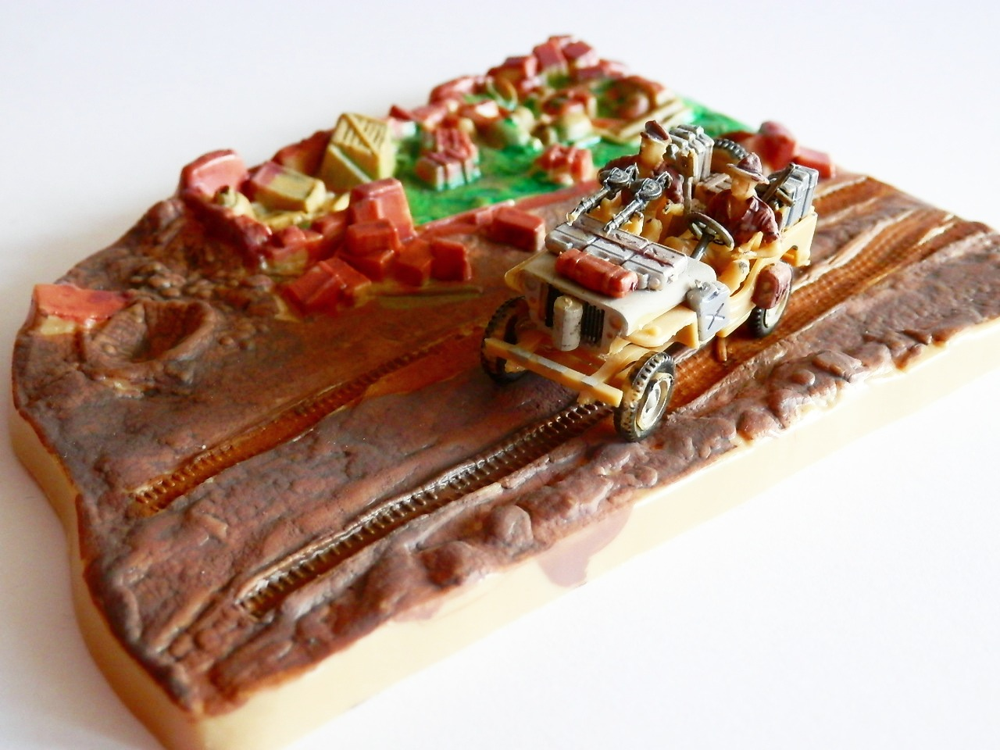
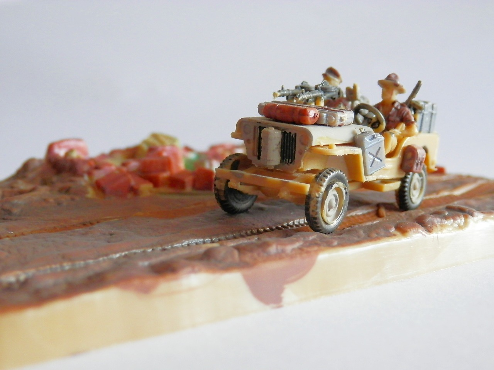
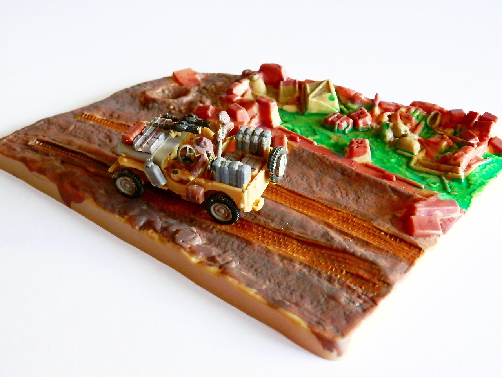

Mezzi militari · scale model archive
Special Air Service Jeep
Special Air Service Jeep — Kit: Revell, Scale: 1/72. Model by Sara Donati

Photo gallery


English description
Model by Sara Donati
Descrizione italiana
Modello di Sara Donati.